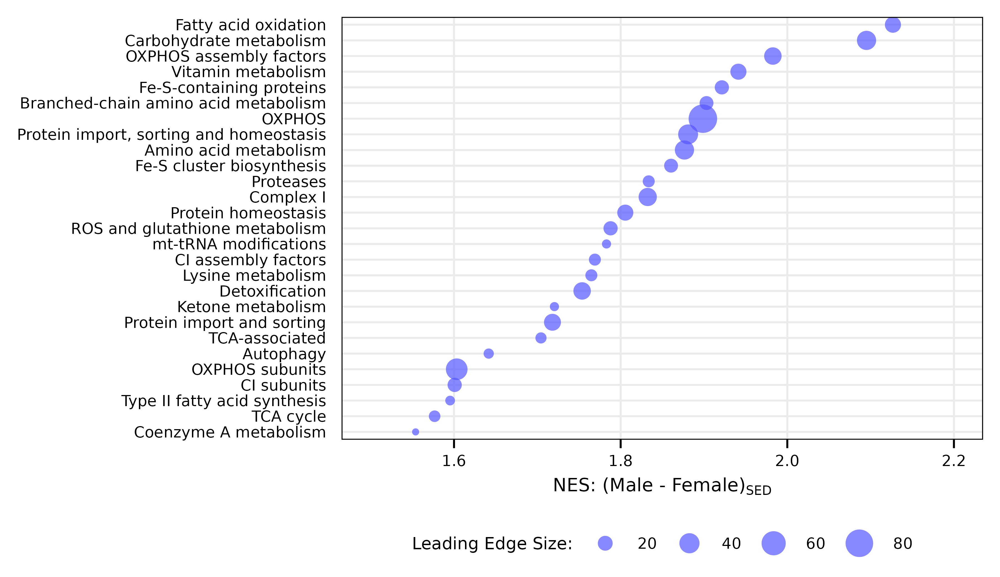

vignettes/articles/MitoCarta_FGSEA_heatmaps.Rmd
MitoCarta_FGSEA_heatmaps.RmdThis article generates a scatterplot and heatmap of the MitoCarta 3.0 FGSEA results (Fig. 5A–B).
library(MotrpacRatTraining6moWATData)
library(MotrpacRatTraining6moWAT)
library(dplyr)
library(ggplot2)
library(ComplexHeatmap)
library(latex2exp)
save_plots <- dir.exists(paths = file.path("..", "..", "plots"))
## SED MvF plot ---------------------------------------------------------------
x <- PROT_MITOCARTA_FGSEA$MvF_SED %>%
filter(padj < 0.05) %>%
arrange(NES) %>%
mutate(pathway = factor(pathway, levels = unique(pathway)),
leading_edge_size = lengths(leadingEdge),
top_genes = unlist(lapply(leadingEdge_genes, function(x)
paste(head(x, 6), collapse = ", ")
)),
top_genes = ifelse(leading_edge_size > 6,
paste0(top_genes, ", ..."), top_genes))
p1 <- ggplot(x, aes(x = NES, y = as.numeric(pathway),
size = leading_edge_size)) +
geom_point(color = "#5555ff", alpha = 0.7, shape = 16) +
scale_size_area(name = "Leading Edge Size:",
max_size = 4) +
scale_x_continuous(breaks = seq(1.6, 2.2, 0.2),
limits = c(1.5, 2.2)) +
scale_y_continuous(breaks = 1:length(x$pathway),
labels = levels(x$pathway),
expand = expansion(add = 0.5)) +
labs(x = latex2exp::TeX("NES: (Male - Female)$_{SED}$"),
y = NULL) +
theme_pub() +
theme(panel.grid.minor = element_blank(),
# panel.grid.major.x = element_blank(),
axis.ticks.y = element_blank(),
axis.text.y.right = element_text(size = 5, color = "black"),
legend.margin = margin(t = -2, unit = "pt"),
panel.border = element_rect(color = "black", linewidth = 0.3,
fill = NA),
axis.line = element_blank(),
legend.direction = "horizontal",
legend.position = "bottom",
legend.key.size = unit(10, "pt"))
p1
ggsave(file.path("..", "..", "plots", "MitoCarta_FGSEA_MvF.pdf"), p1, family = "ArialMT",
height = 2.8, width = 2.2, dpi = 400, bg = "white")
## Timewise 4W and 8W comparison heatmap -------------------------------------
scale <- 2
heatmap_legend_side <- annotation_legend_side <- "right"
align_heatmap_legend <- align_annotation_legend <- "heatmap_top"
direction <- "vertical"
legend_width <- NULL
legend_height <- unit(90, "points")
column_labels <- rep(paste0(2 ^ (0:3), "W - SED"), times = 2)
anno_df <- data.frame(Sex = rep(c("Female", "Male"), each = 4))
anno_colors <- list(Sex = c("Female" = "#ff6eff", "Male" = "#5555ff"))
top_annotation <- HeatmapAnnotation(
df = anno_df,
col = anno_colors,
gap = unit(0, "points"),
gp = gpar(col = "black"),
annotation_name_gp = gpar(fontsize = 7 * scale),
annotation_legend_param = list(
nrow = 2, by_row = T,
grid_height = unit(14, "points"),
grid_width = unit(14, "points"),
border = "black",
title_gp = gpar(fontsize = 7 * scale),
labels_gp = gpar(fontsize = 6 * scale)
)
)
column_split <- anno_df$Sex
colors <- c("#3366ff", "darkred", "grey")
# Get terms that are enriched in later timepoints
late_terms <- PROT_MITOCARTA_FGSEA$trained_vs_SED %>%
filter(grepl("4|8", contrast)) %>%
group_by(pathway) %>%
summarise(any_sig = any(padj < 0.05),
max_val = max(-log10(padj), na.rm = TRUE)) %>%
filter(any_sig) %>%
slice_max(order_by = max_val, n = 20) %>%
pull(pathway)
PROT_MITOCARTA_FGSEA$trained_vs_SED %>%
filter(pathway %in% late_terms) %>%
enrichmat(n_top = 20,
colors = colors,
scale_by = "row",
cell_size = unit(6 * scale , "points"),
padj_legend_title = "BH-adjusted\np-value",
padj_args = list(
title_gp = gpar(fontsize = 7 * scale),
labels_gp = gpar(fontsize = 6 * scale),
grid_height = unit(6 * scale, "pt"),
grid_width = unit(6 * scale, "pt")
),
rownames_column = "pathway",
heatmap_args = list(
column_labels = column_labels,
column_title_side = "bottom",
column_split = column_split,
column_title = NULL,
column_names_gp = gpar(fontsize = 5.5 * scale),
row_names_gp = gpar(fontsize = 5.5 * scale),
top_annotation = top_annotation,
heatmap_legend_param = list(
title_gp = gpar(fontsize = scale * 6.5),
labels_gp = gpar(fontsize = scale * 6),
direction = direction,
legend_width = legend_width,
legend_height = legend_height
)
),
filename = file.path("..", "..", "plots",
"MitoCarta_FGSEA_timewise.pdf"),
height = scale * unit(2.5, "in"),
width = scale * unit(3.2, "in"),
units = "in",
draw_args = list(
legend_gap = unit(0.4, "in"),
gap = unit(0.5, "in"),
adjust_annotation_extension = TRUE,
heatmap_legend_side = heatmap_legend_side,
annotation_legend_side = annotation_legend_side,
align_annotation_legend = align_annotation_legend,
align_heatmap_legend = align_heatmap_legend
),
save_args = list(res = 400, dpi = 400, family = "ArialMT")
)